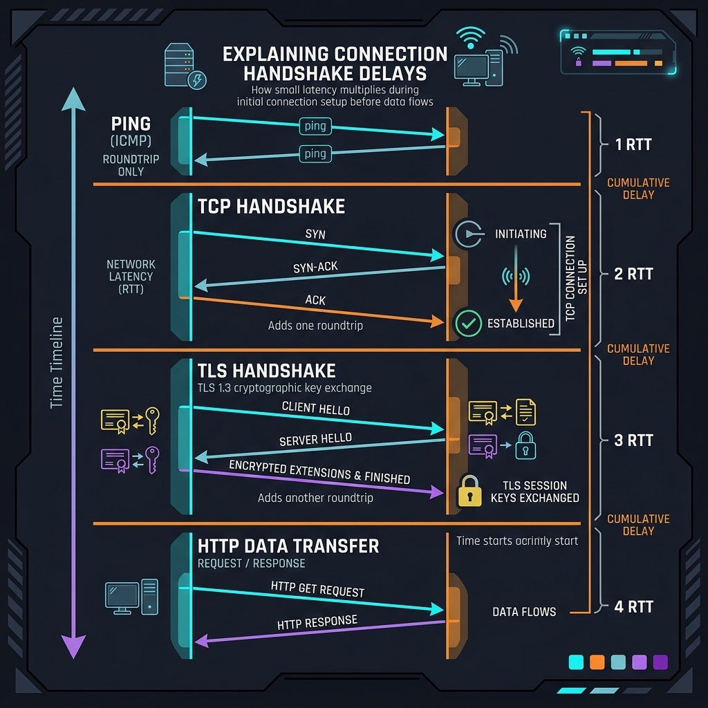

在选择科学上网（翻墙）节点时，90% 用户的衡量标准都极为简单粗暴：“哪个节点延迟低，我就选哪个”。如果看到香港节点测试延迟只有 20ms，就会欣喜地设为常驻；如果看到美国节点延迟有 200ms，就会避而远之。
然而，现实往往非常令人困惑：为什么测试延迟明明只有 20ms 的香港节点，打开 YouTube 网页时却一直在转圈等待，首屏慢得像蜗牛？而相反，延迟有 180ms 的美国或者欧洲节点，点开视频反而秒开，4K 缓存速度一骑绝尘？ 这并非是你的客户端出现了 Bug，而是由底层的网络协议规律决定的。本篇文章将带您击碎“低延迟 = 高速度”的迷思，深度揭秘多次往返握手（RTT）对速度的放大效应，以及谷歌 BBR 算法的核心作用。
一、 什么是 ICMP Ping？它为什么不能代表速度
我们平时所说的 Ping 值，大多是基于计算机网络第三层（网络层）的 ICMP（Internet Control Message Protocol） 协议。它的工作极其单纯：发出一个极轻量的数据探测包到目标服务器，服务器收到后原封不动返回。这仅仅能测试数据在光纤介质中往返（RTT, Round-Trip Time）的物理时间，反映的是数据包的连通情况。
但这绝对不等于你的“业务传输速度”。
因为在你真正的科学上网行为中，比如访问 Google 网页，你的数据包不仅要在光纤里跑，还要在第四层（传输层）建立连接、在安全层（TLS）交换加密密钥、在应用层（HTTP）处理数据，甚至要通过机场的代理中转机进行协议解包。这一连串动作都需要耗费往返时间。

二、 真实请求的“多重握手延迟乘数效应”
为了直观理解，我们来看一个普通的直连科学上网请求发起时，客户端和境外服务器之间到底经历了多少次往返：
- TCP 三次握手： 客户端发 SYN，服务端回 SYN-ACK，客户端再发 ACK。消耗 1.0 RTT。
- TLS 1.2 加密握手： 客户端和服务端开始协商加密证书、公钥，通常需要往返 2 次。消耗 2.0 RTT。
- 代理协议验证： 代理客户端（如 Clash）向节点服务器发送验证密码，消耗 0.5 RTT。
- 目标网站握手： 代理服务器代为你向谷歌发起真实的 TCP 和 TLS 握手。如果谷歌离代理服务器近，这一步消耗较小。
可以看出，在数据还没开始下载前，本地已经付出了至少 3.5 到 4 个 RTT（往返时延） 的硬性代价。
如果你的物理 Ping 延迟是 50ms：那么实际首字节返回时间（TTFB）至少要花费：50ms * 4 = 200ms。这完全在可接受范围内。
如果你的物理 Ping 延迟是 250ms：实际首字节时间就要变成：250ms * 4 = 1000ms（整整1秒钟！）。这就是为什么高延迟节点打开小网页时，总感觉要“卡顿转圈一下”才显示内容的原因。
三、 物理规律：延迟如何决定单线程下载上限
为什么有些延迟 180ms 的美国节点虽然网页打开卡一下，但一旦看起 4K 视频，速度却能轻松飙满 100Mbps？
这里有一个经典的计算机网络吞吐率公式（由 TCP 滑动窗口机制决定）：
在没有启用现代底层加速算法时，如果一个连接的 RTT 是 200ms，而默认的 TCP 接收缓冲区窗口是 64KB，那么该连接的最大单线程速度就是：
64KB / 0.2s = 320 KB/s (相当于 2.5 Mbps 宽带)。
也就是说，即使你的宽带是 1000M 光纤，服务器也是 10Gbps 口子，由于 200ms 物理延迟的存在，你单线程下载文件的速度也会被无情锁死在 320KB/s。但是，如果服务器端的操作系统经过深度调优（例如扩大了默认的 TCP 窗口），且采用了新型的拥塞控制算法，这一限制就会被彻底打破。
四、 谷歌 BBR 拥塞控制算法的降维打击
为了突破 TCP 的物理吞吐瓶颈，Google 在几年前推出了革命性的拥塞控制算法 —— BBR（Bottleneck Bandwidth and RTT）。
传统的 TCP 拥塞控制算法（如 Cubic）非常保守和“胆小”。它的逻辑是：一旦检测到网络中发生了数据丢包，就立即判定网络已经极度拥堵，从而把发送数据的滑动窗口大小“砍掉一半”，导致速度瞬间暴跌。而在跨国公网网络中，丢包是极其常见的，很多时候是因为防火墙的随机阻断，而非真实物理拥堵。Cubic 算法在遇到这种丢包时，直接让高延迟线路的速度掉到谷底。
而 BBR 算法 的逻辑是：它不通过丢包来判断拥堵。它在后台持续监控链路的“最大可用带宽”和“最小往返时间（RTT）”。只要这两个数据没有恶化，即使公网上丢包率达到了 20%，BBR 也依然会维持极高的数据发送窗口。
五、 用户本地调优的三个终极方案
如果你想彻底解决“延迟低却卡顿，或是高延迟节点体验差”的矛盾，可以在本地设备上实施以下优化策略：
-
在客户端开启 TCP Fast Open（TFO）：
TCP Fast Open 允许客户端在发起 TCP SYN 握手包的同时，直接将第一批 HTTP/TLS 数据捎带发送过去。这使得后续请求能够直接免去 1.0 RTT 的建连耗时，大幅降低首屏等待感。在 Clash Verge 的“Settings”中开启tcp-fast-open: true即可。 -
优先使用 QUIC (HTTP/3) 协议节点：
相比于基于 TCP 的 Shadowsocks 或 Trojan，新一代基于 QUIC 的协议（如 TUIC v5 或 Hysteria 2）由于利用了 UDP 底层，原生支持 0-RTT 握手，将建连握手次数压缩到了极致，即使是 200ms 的美国节点，开启 TUIC v5 后的网页打开速度也会与香港节点无异。 -
避免盲目追求小连接测试延迟：
在客户端里测速时，建议将测试逻辑从单纯的“握手延迟测试”改为“真实测速（Speedtest）”。你可以参考 如何利用 Speedtest 真实测试节点带宽 中的保姆级测速方法，找出那些真正拥有充足带宽储备和 BBR 加速的优质节点，而不是被虚假的 20ms 低延迟节点蒙蔽。